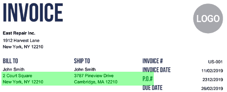
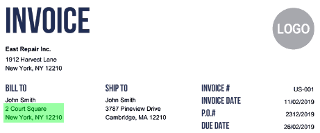

02 Hugging Face
청구서에 맞춘 문서 답변 추출
cc-by-nc-sa-4.0 법무 확인공개일 03.25
문서 질의응답은 범용형과 서식 특화형으로 갈린다. 청구서는 항목 위치가 비교적 정해져 있어 특화 모델이 실무에 더 맞을 때가 있다. impira/layoutlm-invoices는 그중 청구서에 초점을 둔 후보다.
무엇을 하는 모델인가
이 모델은 청구서와 다른 문서에서 질문 답을 뽑는다. Impira 팀이 만들었다. 청구서 데이터와 SQuAD2.0, DocVQA로 미세조정했다. 비상업 라이선스라 사내 상업 이용은 불가하다.


어떻게 불러 쓰나
| 라이브러리 | transformers |
|---|---|
| 파이프라인 | document-question-answering |
| 권장 사용법 | The best way to use this model is via DocQuery. |
원문 카드에 실행 예제가 없습니다.
돌리는 데 필요한 것
| 라이브러리 | transformers |
|---|---|
| 파이프라인 | document-question-answering |
| 파라미터 | 카드·API에 없음 |
| 지원 언어 | en |
라이선스와 사내 반입
- 라이선스
- cc-by-nc-sa-4.0 법무 확인
- 상업 이용
- 비상업 조건 — 사내 상업 이용 불가
- 접근 승인
- 필요 없음
- 재배포·파생
- 동일 조건으로 공유해야 함
자동 분류이며 법무 판단을 대신하지 않습니다.
성능과 한계
카드는 비연속 토큰을 골라 주소 같은 답을 더 정확히 뽑는다고 설명한다. 다만 수치 평가표와 비교 대상은 싣지 않았다. 카드는 평가 결과를 밝히지 않았다.
언제 이것을 고르나
사내 상용 업무를 전제로 하면 이 모델은 초반에 제외된다. 같은 Impira 계열인 impira/layoutlm-document-qa는 상업 이용 제약이 없다. 청구서에 특화한 동작 설명이 꼭 필요하고 연구나 비상업 검토라면 이 모델을 볼 수 있다. 배포나 재공유까지 고려하면 동일조건공유 의무도 함께 봐야 한다.
주요 용어
비상업 라이선스(Non-commercial): 돈을 버는 업무나 서비스에 쓰지 못하게 막는 조건 동일조건공유(ShareAlike): 재배포할 때 같은 라이선스를 유지해야 하는 조건 문서 질의응답(Document Question Answering): 문서에서 질문에 맞는 답을 찾는 과업 비연속 토큰(Non-consecutive tokens): 문장 안에서 떨어진 단어들을 함께 답으로 고르는 방식
원문 정보
제목: impira/layoutlm-invoices
공개일: 2023.03.25